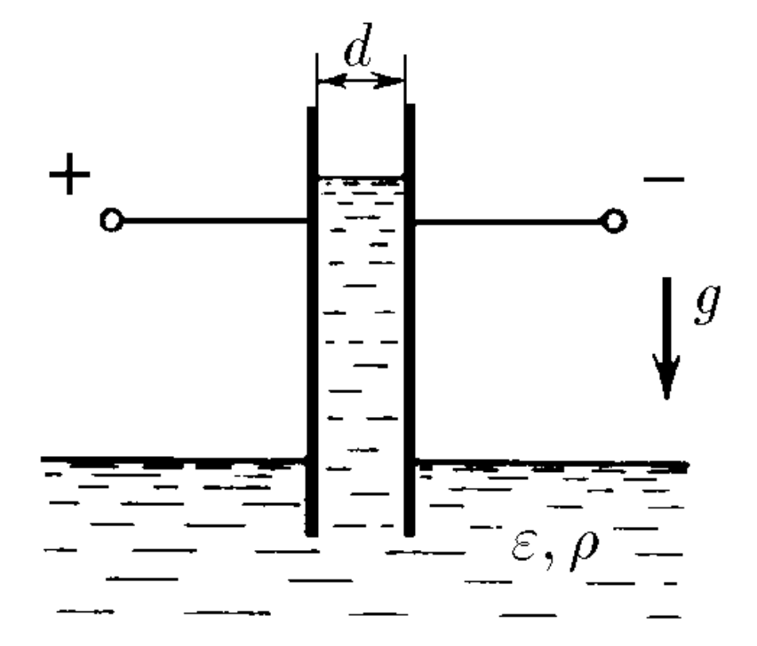
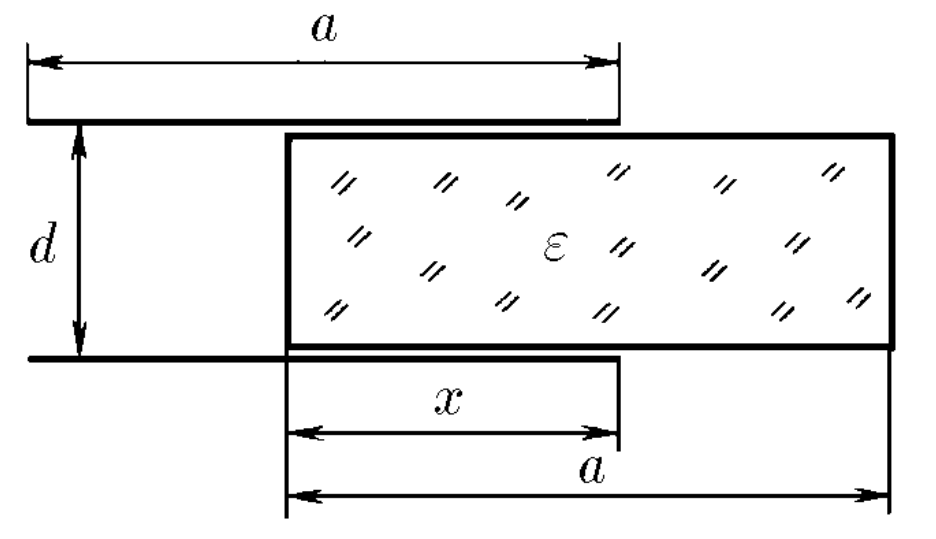

Условие:
$6.6.21.$ В широкий сосуд с жидкостью ставится вертикально плоский конденсатор так, что нижняя часть пластин конденсатора погружается в жидкость. Конденсатор подключён к батарее, которая поддерживает на обкладках конденсатора разность потенциалов $V$. Расстояние между пластинами конденсатора $d$, плотность жидкости $ρ$, диэлектрическая проницаемость $ε$. Жидкость несжимаема. На какую высоту поднимется жидкость? Поверхностным натяжением пренебречь.

Решение:
Пусть столб жидкости поднялся на высоту $h$
Емкость конденсатора представит емкость паралельных конденсаторов $C_1$ и $C_2$

Емкость конденсатора представит емкость паралельных конденсаторов $C_1$ и $C_2$ для обкладок размера $a × a$
Расчитаем энергию $E=\frac{CV^2}{2}$ этого конденсатора:
Потенциальная энергия столба жидкости составит:
Полная энергия:
Будет минимальна при $\frac{dE}{dh}=0$: